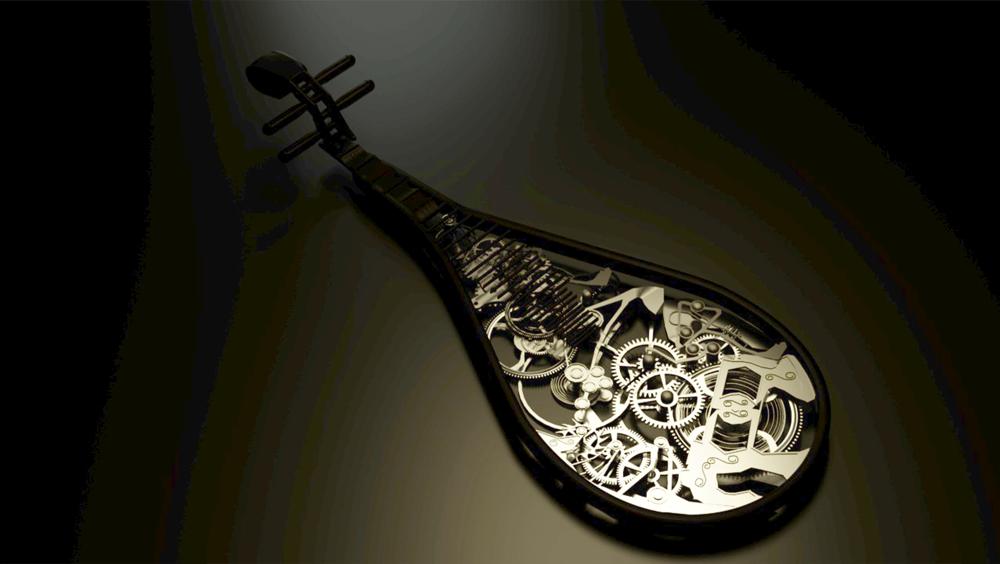
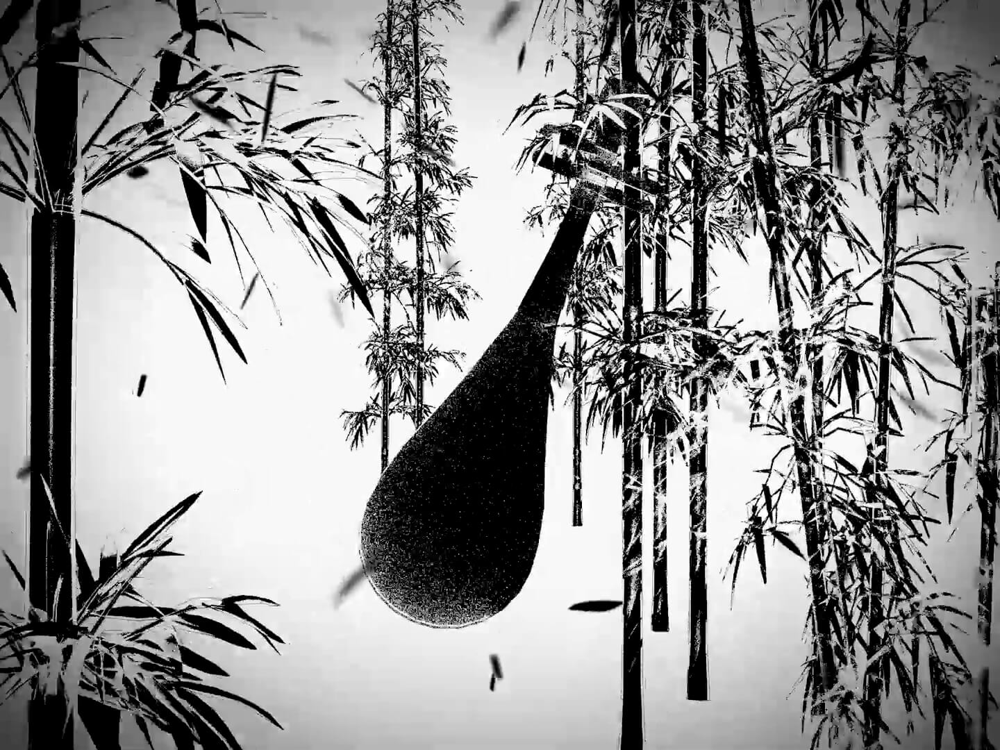
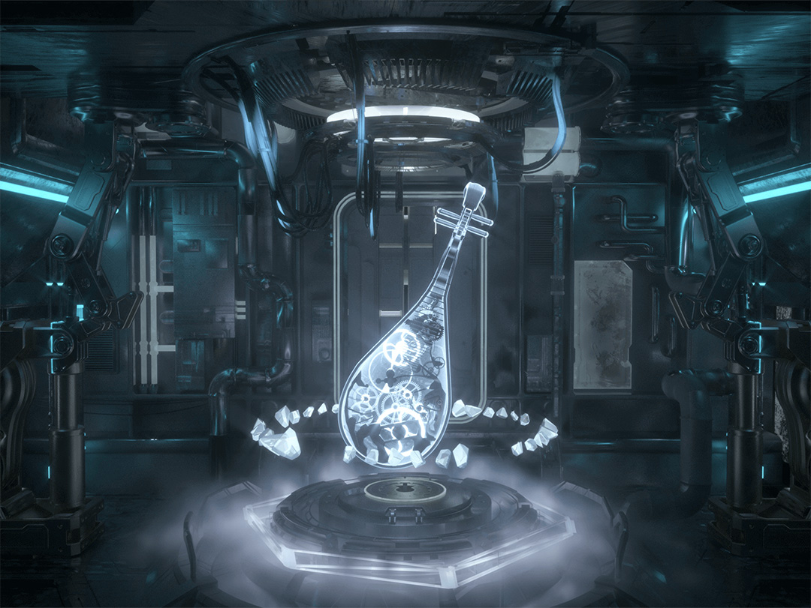

琵琶一曲世千年
创意阐述 Concept
作品灵感源自杨慎《西江月》中的“琵琶一曲世千年，瞬息兴亡过眼”。
我们将琵琶作为 3D Mapping 的光影载体，通过场景的更迭象征时光绵延与朝代更替。从秦汉西域的传入，到唐宋文人的高雅情怀，再到未来电子音波的无限畅想，以此传达“弦动之间，千年一瞬”的意境。
视觉演变 Visual Evolution
作品在时间轴上跨越了三个主要阶段：

01. 机械解构
将琵琶内部结构进行机械化重组，隐喻历史的精密与厚重。

02. 文人墨客
利用流体特效模拟水墨晕染，展现唐宋时期的高雅情怀。

03. 未来回响
电子音波与无线琴弦，对未来乐器形态的数字化畅想。
技术实现 Tech Stack
- 模型与特效： 使用 Cinema 4D 进行琵琶与场景的高精度建模。
- 流体模拟： 利用 TurbulenceFD 制作烟雾与水墨特效，X-particles 制作光效粒子。
- 光影映射： 通过 3D Mapping 技术将数字影像精准投射于实体琵琶表面。